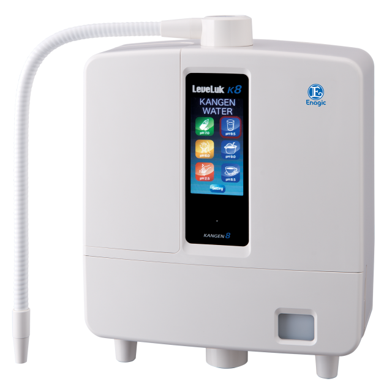

The Mighty 8-Plate Anti-Oxidizer Kangen 8 (K8)
The K8 (Kangen 8) is Enagic's most powerful antioxidant machine - featuring 8 platinum-dipped titanium plates for improved water ionization and increased antioxidant production potential.
You can enjoy this Kangen Water® machine in any country, thanks to its worldwide multi-voltage power supply and interchangeable plug capability (sold separately). If you're looking for a powerful and versatile machine with plenty of user-friendly and energy-saving automated features, the K8 is for you.
Buy Kangen 8 More infoThe K8 is full of new user-friendly features!
The K8 is extremely user-friendly, thanks to a large full color LCD panel and clear voice prompts. With just a touch of a button, you can have access to any of the 5 waters you choose. Your machine will confirm the water you have selected with a pleasant voice, and in moments the machine will generate healthy, ionized water through a flexible pipe.
The mighty K8 is a mighty antioxidant producer! The K8 water ionizer generates a continuous stream of 5 versatile types of water to meet all your versatile commercial needs: Strong Kangen Water, Kangen Water®, Neutral Water, Beauty Water, and Strong Acidic Water.
REALIZING TRUE HEALTH AROUND THE GLOBE